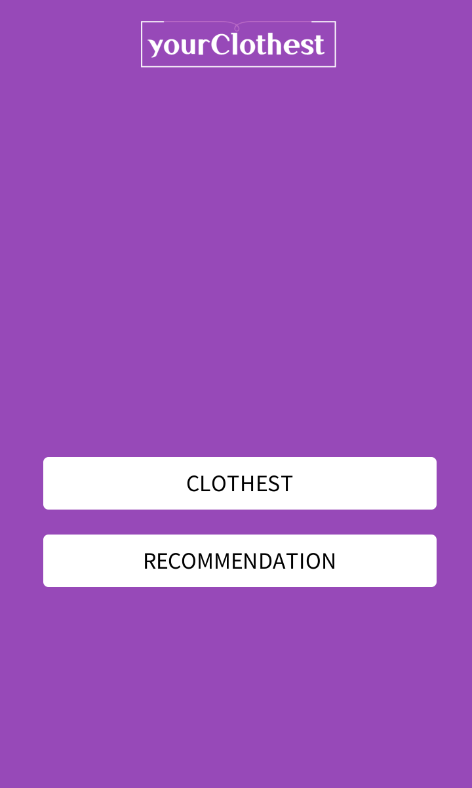
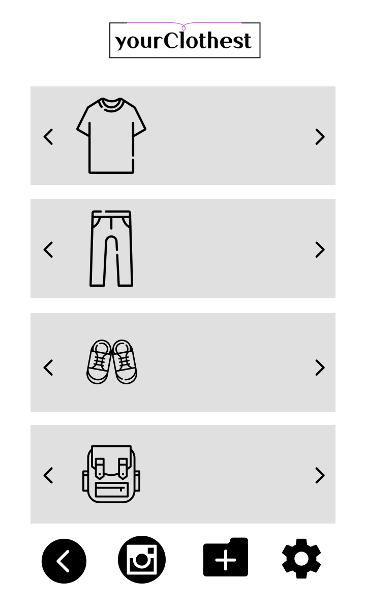
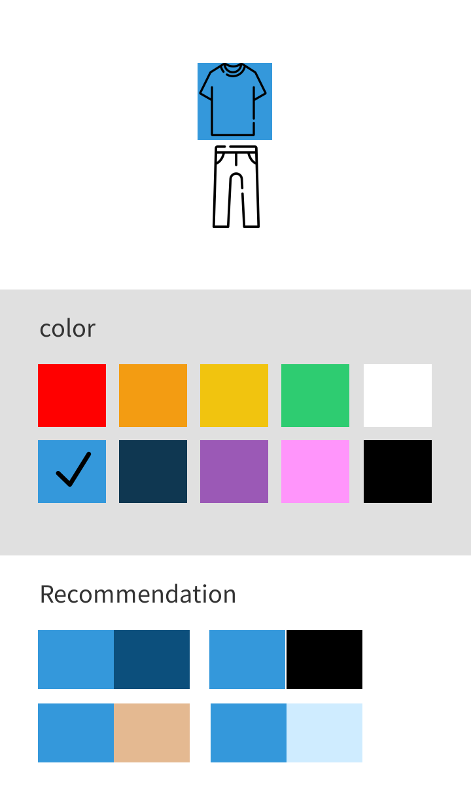

how to use Application¶
You can see the two buttons.
{kind=link}
clothest¶
If you click the “CLOTHEST”, You can see the virtual closet. Adding the clothes is available.
{kind=link}
If you click the clothest button, you can see the your virtual clothest or register the clothes. Clothest has the four sections - top,bottom,shoes,accessaries -.
The clothest is sorted according to the type of clothes. You can easily check the clothes you have.
There are icons of camera, gallery, and settings at the bottom.
If you want to register the clothes, click the camera or gallery buttons.
recommendation¶
If you click the “RECOMMENDATION”, You can get the recommendation ot the color combination according to your selection.
{kind=link}
If you click the recommendation button, you can get the color combination recommendation Recommendation show the white color top and bottom.
There are buttons - Home, Top, Bottom at the bottom.
If you want to go back the main page, click the home.
If you want to receive a color combination according to the color of the top, click the Top , You can see the color palette of the top . click one color of the palette, then you can see the top color combination according to that color
If you want to receive a color combination according to the color of the bottom, click the Top , You can see the color palette of the bottom . click one color of the palette, then you can see the top color combination according to that color.